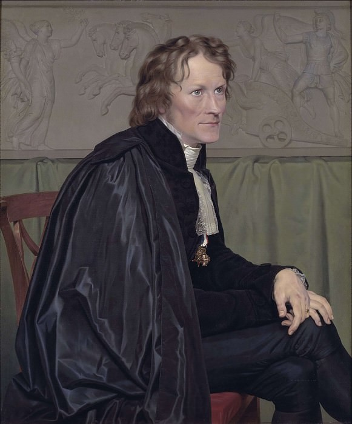

MONUMENTS I VISITED

The Taj Mahal was commissioned by Shah Jahan in 1631, to be built in the memory of his wife Mumtaz Mahal, who died on 17 June that year, while giving birth to their 14th child, Gauhara Begum. Construction started in 1632, and the mausoleum was completed in 1648, while the surrounding buildings and garden were finished five years later. The imperial court documenting Shah Jahan's grief after the death of Mumtaz Mahal illustrates the love story held as the inspiration for the Taj Mahal.
The Taj Mahal incorporates and expands on design traditions of Persian and earlier Mughal architecture. Specific inspiration came from successful Timurid and Mughal buildings including the Gur-e Amir (the tomb of Timur, progenitor of the Mughal dynasty, in Samarkand). Humayun's Tomb which inspired the Charbagh gardens and hasht-behesht (architecture) plan of the site, Itmad-Ud-Daulah's Tomb (sometimes called the Baby Taj), and Shah Jahan's own Jama Masjid in Delhi. While earlier Mughal buildings were primarily constructed of red sandstone, Shah Jahan promoted the use of white marble inlaid with semi-precious stones. Buildings under his patronage reached new levels of refinement.
| Creators | Images | Click here to know more about him |
|---|---|---|
| Mughal emperor Shah Jahan | |
Shahab-ud-din Muhammad Khurram better known by his regnal name Shah Jahan was the fifth Mughal emperor, who reigned from 1628 to 1658 |

From the early 17th century, a regiment of Swiss Guards had served as part of the Royal Household of France.
On 6 October 1789, King Louis XVI had been forced to move with his family from the Palace of Versailles to the Tuileries Palace in Paris.
In June 1791 he tried to flee to Montmédy near the frontier, where troops under royalist officers were concentrated.In the 1792 10th of August Insurrection, revolutionaries stormed the palace.
Fighting broke out spontaneously after the Royal Family had been escorted from the Tuileries to take refuge with the Legislative Assembly.The Swiss Guards ran low on ammunition and were overwhelmed by superior numbers.
A note written by the King half an hour after firing had commenced has survived, ordering the Swiss to retire and return to their barracks.
Delivered in the middle of the fighting, this was only acted on after their position had become untenable.
Of the Swiss Guards defending the Tuileries, more than six hundred were killed during the fighting or massacred after surrender.
An estimated two hundred more died in prison of their wounds or were killed during the September Massacres that followed.
Apart from about a hundred Swiss who escaped from the Tuileries, the only survivors of the regiment were a 300 strong detachment which, with the King's authorization, had been sent to Normandy to escort grain convoys a
few days before August 10.
The Swiss officers were mostly amongst those massacred, although Major Karl Josef von Bachmann — in command at the Tuileries — was formally tried and guillotined in September, still wearing his red uniform coat.
Two surviving Swiss officers achieved senior rank under Napoleon.
The Lion lies in his lair in the perpendicular face of a low cliff—for he is carved from the living rock of the cliff. His size is colossal, his attitude is noble. His head is bowed, the broken spear is sticking in his shoulder, his protecting paw rests upon the lilies of France. Vines hang down the cliff and wave in the wind, and a clear stream trickles from above and empties into a pond at the base, and in the smooth surface of the pond the lion is mirrored, among the water-lilies.
| Creators | Images | Click here to know more about him |
|---|---|---|
| Bertel Thorvaldsen |  |
Bertel Thorvaldsen was a Danish sculptor of international fame and medallist, who spent most of his life in Italy. |
@VANSH AGGARWAL